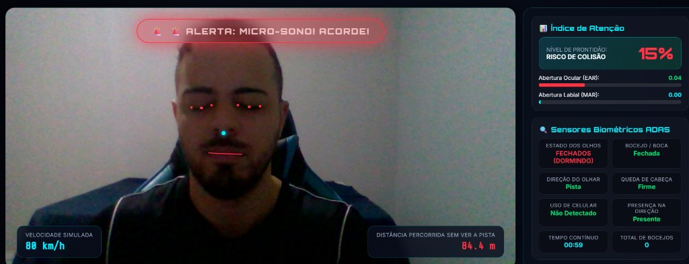
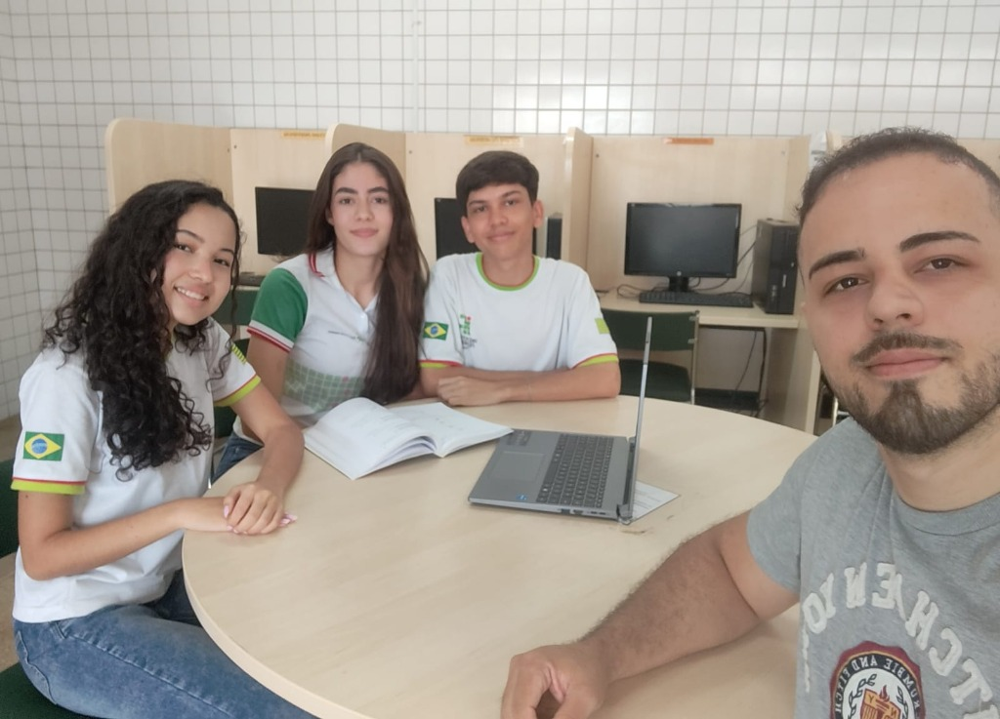
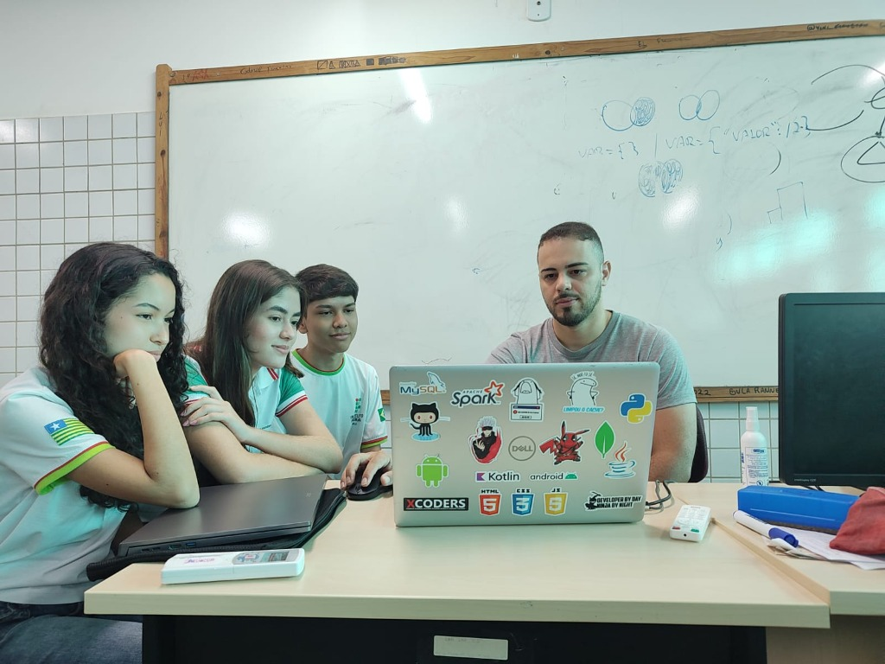
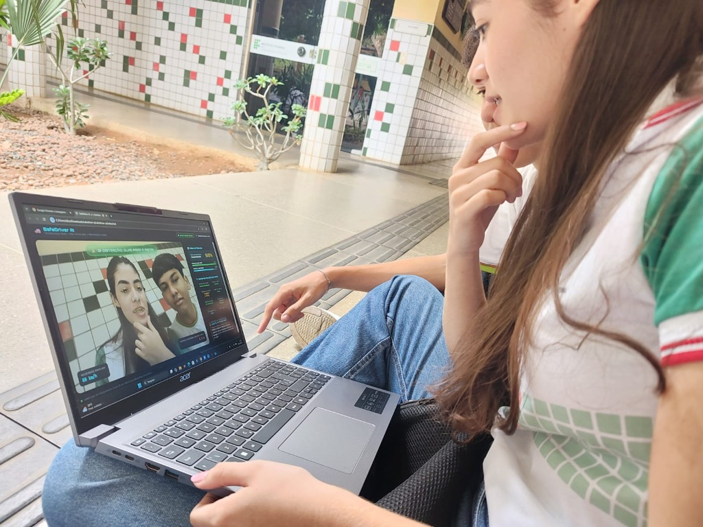
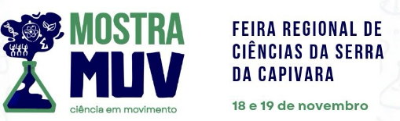

Inspirado em Argos Panoptes — o gigante de cem olhos da mitologia grega que tudo vê e jamais adormece —, nosso sistema utiliza Python, MediaPipe e Visão Computacional para monitorar o motorista em tempo real e impedir acidentes por fadiga, micro-sono e distração com o celular.
Toque nos botões abaixo para simular diferentes comportamentos do motorista e veja como a Visão Computacional reage em frações de segundo:

O motorista fechou os olhos por tempo prolongado (> 1,5s). O cálculo da proporção ocular (EAR = 0.04) cai drasticamente e a abertura bucal (MAR) monitora bocejos prévios de exaustão.
Sem precisar de sensores caros presos ao corpo do motorista, o ArgosDriver transforma uma câmera comum em um copiloto inteligente em 3 passos:
A câmera posicionada no painel monitora o rosto do condutor continuamente, funcionando de forma 100% local e respeitando a privacidade (nenhuma imagem é enviada para a internet).
Utilizando Python e Visão Computacional, o sistema mapeia automaticamente os pontos principais do rosto — acompanhando os olhos, a boca e a inclinação da cabeça para identificar sinais de sono ou distração.
O sistema diferencia um simples piscar de olhos de um cochilo real, disparando alarmes sonoros e alertas visuais imediatamente antes que o acidente aconteça.
O ArgosDriver foi construído utilizando Engenharia de Software Assistida por Inteligência Artificial: todo o código foi gerado com apoio de IA sob o direcionamento, inspeção cuidadosa, ajustes e testes práticos da equipe e do professor orientador no IFPI Campus São Raimundo Nonato.

Nos laboratórios do IFPI, os estudantes e o orientador pesquisaram sobre os acidentes causados pelo sono na direção e definiram exatamente quais comportamentos de risco o sistema precisava identificar.

Utilizamos a Inteligência Artificial como ferramenta para gerar a programação do sistema e da interface. A equipe guiou cada etapa, revisando o funcionamento e personalizando a identidade visual do ArgosDriver.

Com o protótipo pronto, os alunos realizaram baterias de testes diante da câmera para inspecionar os resultados, corrigir falhas e garantir que os alertas de sono, bocejo e celular funcionassem de verdade.
Assim como ocorre hoje nas empresas de tecnologia mais modernas do mundo, a IA atuou como copiloto de programação, permitindo que estudantes do 1º ano do Ensino Médio transformassem uma ideia real de segurança no trânsito em um software completo — exercitando o pensamento crítico, a direção de projetos e a inspeção de qualidade.
A combinação de fadiga e celular ao volante está entre as maiores causas de acidentes graves nas rodovias brasileiras. Veja o que acontece quando você tira os olhos da pista:
A 80 km/h, um veículo percorre 22,2 metros por segundo. Responder uma simples mensagem de 4,5 segundos no celular equivale a dirigir de olhos vendados por 100 metros!
Segundo estudos de segurança viária (ABRAMET / OMS), manusear o smartphone ao volante aumenta em até 4 vezes a chance de colisão frontal ou atropelamento.
O ArgosDriver contribui diretamente para o Objetivo de Desenvolvimento Sustentável 3.6 da ONU: reduzir pela metade as mortes e lesões no trânsito através da tecnologia preventiva.
Arraste os controles abaixo para descobrir quantos metros seu veículo percorre sem ninguém olhando para a estrada durante um cochilo ou olhada no WhatsApp:
⚠️ Equivale a ultrapassar 15 carros enfileirados de olhos vendados!
"Nenhuma mensagem vale uma vida e nenhum destino é tão urgente que não permita uma parada para descansar. Seja você também um multiplicador da segurança no trânsito na Mostra MUV 2026!"
Campanha de Conscientização Viária • Projeto ArgosDriver (IFPI)
Projeto desenvolvido por estudantes do curso Técnico em Informática Integrado ao Ensino Médio do Instituto Federal do Piauí (IFPI), apresentado na Mostra MUV — Feira Regional de Ciências da Serra da Capivara (18 e 19 de novembro).

Conheça os pesquisadores responsáveis pela concepção, programação e validação do sistema ArgosDriver:

Discente do Curso Técnico em Informática Integrado ao Médio • IFPI São Raimundo Nonato

Discente do Curso Técnico em Informática Integrado ao Médio • IFPI São Raimundo Nonato
Discente do Curso Técnico em Informática Integrado ao Médio • IFPI São Raimundo Nonato